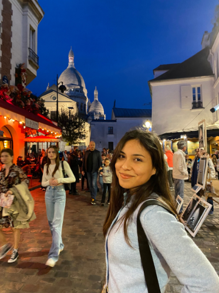
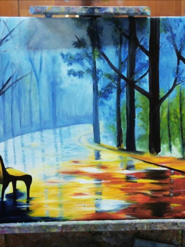
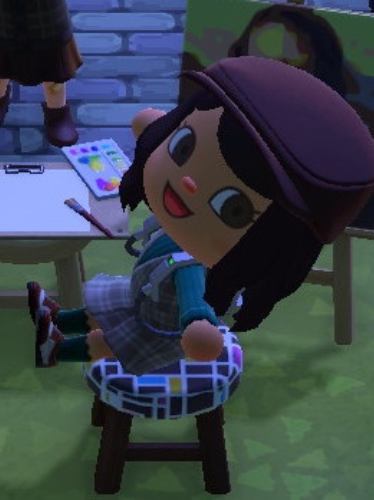

Hobbies
Viajes
Viajera empedernida, con ganas de conocer el mundo. Más cultura, más personas, más sitios nuevos...
Como estos tres últimos años, en los que he viajado a Dinamarca, Menorca, Viena, Croacia, París y Riga. ¡Siempre pendiente del próximo avión!
Fotografía
Con mi cámara Canon en mano o con mi iPhone.
Soy la típica que hace mil fotos y vídeos para que esos recuerdos queden plasmados.
Pintura
El hobbie por excelencia. Desde los 9 años me ha encantado plasmar fotografías a través del pincel.
Sobre todo si es con óleo y música de fondo.
Videojuegos
Especialmente Mario Kart y Animal Crossing.
Como se suele decir, somos gente de costumbres, y desde primaria, con mi primera consola Nintendo DS, encontré uno de los mejores pasatiempos.
Experiencia
Community Manager
Social Media Manager

Especialista en Marketing Digital 360º